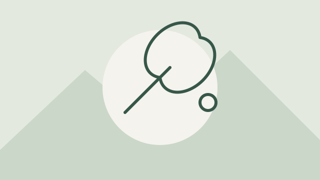
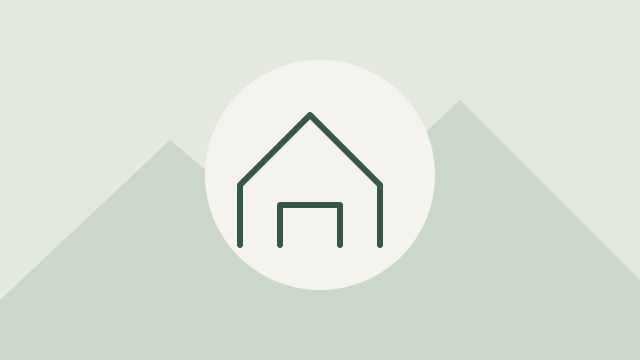
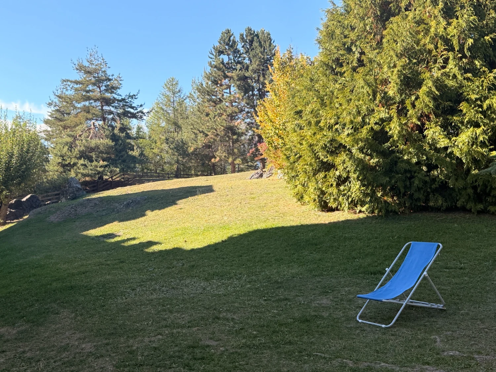
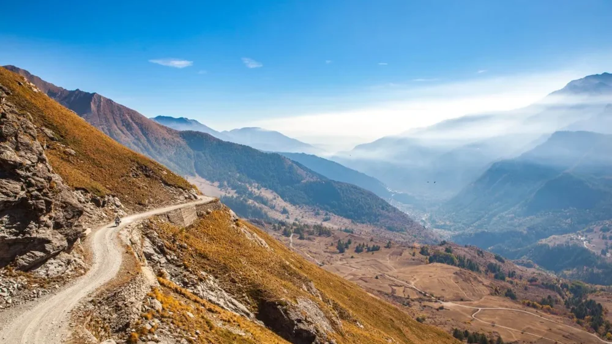
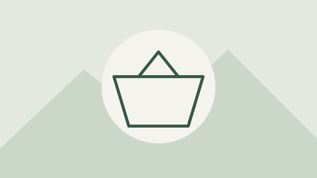

Hiver
HiverUne journée de ski idéale
Skiez depuis Jouvenceaux ou Clotes (5–8 min en voiture environ). Déjeuner à Sportinia.
Informations ↗Réveillez-vous. Explorez. Rentrez. Quand il pleut ou neige, profitez des films, jeux de société, tisanes, musique Sonos et lumières chaleureuses. Au soleil, partez à l’aventure.
 Hiver
HiverSkiez depuis Jouvenceaux ou Clotes (5–8 min en voiture environ). Déjeuner à Sportinia.
Informations ↗ Hiver
HiverBalades hivernales, luge dans les zones autorisées et raquettes avec guide.
Informations ↗ Été et sport
Été et sportBike park, vélos électriques et route de l’Assietta. Location chez Faure Sport et 3Sixty.
Informations ↗
Été et sportPin Court à Sauze, ainsi que les installations de Sestriere et Bardonecchia.
Informations ↗
FamilleStages d’été, tennis et multisport : Pin Court, PlayOff et Snowmaxx. Vérifiez les formules à la journée et les âges.
Informations ↗
FamilleAdventure Village, balades, paintball et activités sur neige ; vérifiez les âges.
Informations ↗DétenteFilms sur LG OLED, jeux de société, tisane, café, Sonos et lumière douce.
Informations ↗ Détente
DétenteSpas et massages à Sauze et Durancia à Montgenèvre ; vérifiez les conditions d’accès.
Informations ↗ Gastronomie
GastronomieCapanna Mollino, Capanna Kind, Chalet Capannina, Ciao Pais et Clot Bourget.
Informations ↗ Nature
NatureGran Bosco di Salbertrand : mélèzes, balades et observation respectueuse de la faune.
Informations ↗ Nature
NatureObservez le ciel depuis un lieu sûr ou le balcon. Vérifiez les nuages et la lune.
Informations ↗ Culture
CultureMontgenèvre et Briançon : fortifications Vauban, balades et gastronomie.
Informations ↗ Culture
CultureSestriere, Cesana, Claviere, Pragelato, Bardonecchia, Oulx, Usseaux et Valle Argentera.
Informations ↗ Culture
CultureCapanna Mollino, forts d’Exilles et de Fenestrelle, architecture alpine et héritage olympique.
Informations ↗
Été et sportAssietta, Colle delle Finestre et Mont-Cenis à vélo ou moto ; vérifiez les restrictions.
Informations ↗ Culture
CultureConcerts d’été à Sportinia, musique dans les refuges et spectacles au village. Consultez le programme.
Informations ↗
GastronomieMarchés, pain, fromages et produits locaux.
Informations ↗HiverUn verre après le ski, en altitude ou au village. Vérifiez les horaires et la dernière remontée.
Informations ↗Idées saisonnières : vérifiez les dates officielles.
Cesana–Sestriere · Bardonecchia · Sestriere
| Janvier | Événements et tourisme ↗ |
|---|---|
| Février | Événements et tourisme ↗ |
| Mars | Événements et tourisme ↗ |
| Avril | Événements et tourisme ↗ |
| Mai | Événements et tourisme ↗ |
| Juin | Événements et tourisme ↗ |
| Juillet | Événements et tourisme ↗ |
| Août | Événements et tourisme ↗ |
| Septembre | Événements et tourisme ↗ |
| Octobre | Événements et tourisme ↗ |
| Novembre | Événements et tourisme ↗ |
| Décembre | Événements et tourisme ↗ |
Prenez le train jusqu’à Oulx puis vérifiez les bus vers Sauze. En voiture, empruntez l’A32 ou les routes transfrontalières ouvertes. Recharge électrique incluse pour les hôtes au parking couvert.
Trains · Transports locaux